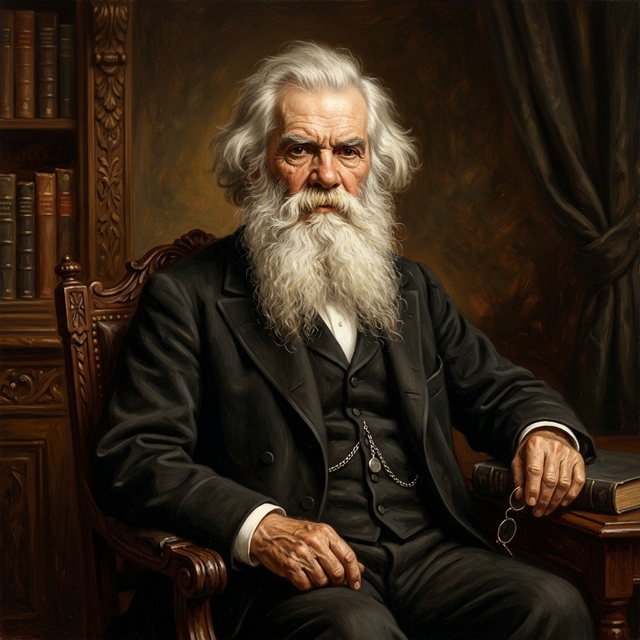
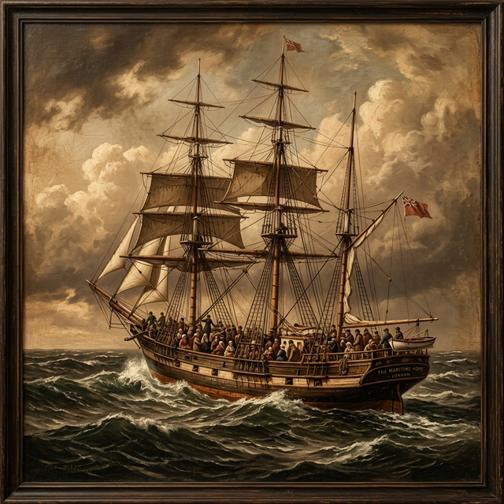
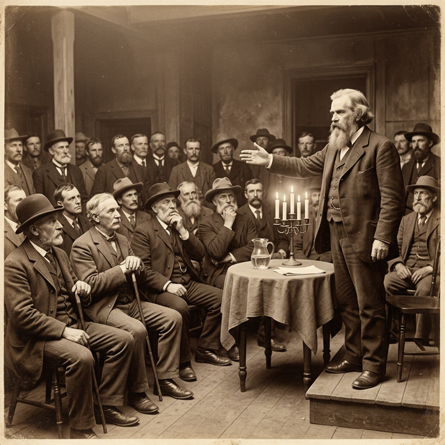
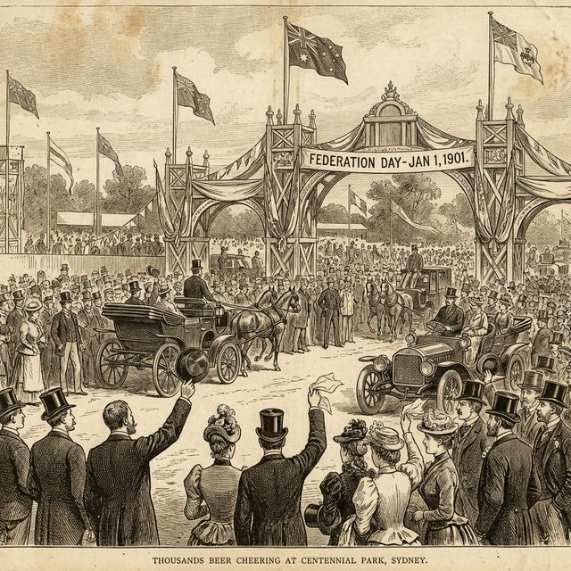

Sir Henry Parkes was a man with a giant dream: to turn six separate colonies into one great nation called Australia.
Henry Parkes was born in England in 1815. His family was very poor. When he was just a young boy, his father lost their farm, and Henry had to work hard jobs to help his family. He worked in a brickpit and even as a road worker!
Eventually, he became an apprentice to an ivory turner. This meant he learned how to carve beautiful things out of bone and ivory. Even though he didn't go to school for long, Henry loved books and taught himself many things.
In 1839, Henry and his wife Clarinda decided to move to Australia. They were immigrants looking for a better life. The journey across the ocean was very long and difficult. They lived in a crowded part of the ship, and their first baby was born at sea just two days before they reached Sydney!
When they arrived, Henry had almost no money. He worked as a farm labourer and in an iron shop. He never gave up, and slowly he began to save money to start his own business in Sydney.

Henry was very good at writing and speaking. In 1850, he started a newspaper called the Empire. He used his newspaper to talk about important ideas, like suffrage (the right to vote) and how to make the colony a fairer place for everyone.
People liked his ideas, and in 1854, he was elected to parliament. He eventually became the Premier of New South Wales five different times! He was becoming one of the most powerful people in Australia.

Before Henry Parkes, many children in Australia didn't go to school because it cost too much or there weren't enough schools. Henry changed that. In 1880, he helped pass a famous law called the Public Instruction Act.
This law made sure that primary school was compulsory (everyone had to go) and secular (separate from any one religion). Because of Henry Parkes, every child in New South Wales had the chance to learn, no matter how much money their family had.

At that time, Australia was made of six separate colonies. They were like six separate countries! They had different laws, different taxes, and even different railway sizes.
In 1889, in the town of Tenterfield, Parkes gave an amazing oration (speech). He told everyone that it was time for the colonies to unite and become one nation. This dream was called Federation.
Click the markers to discover the key moments in Henry’s journey.
Henry is born in England.
Arrives in Sydney as an immigrant.
Starts his newspaper, the Empire.
Passes the Public Instruction Act for schools.
Gives the famous Tenterfield Oration.
Henry Parkes dies, 5 years before Federation day.
Sadly, Henry Parkes died in 1896. He didn't get to see his dream come true on January 1, 1901, when the Commonwealth of Australia was finally born. But everyone knew he was the one who started it all.
His legacy is our nation. Every time we see the Australian flag or go to a public school, we can remember the poor boy from England who had a giant vision for a new country.